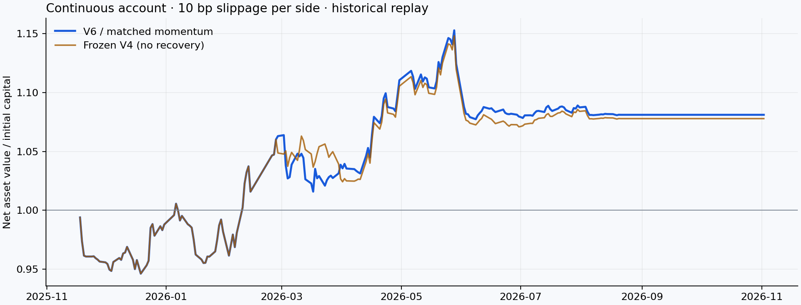

QUANTFOLIO / RESEARCH / V6
单一版本，完整证据
均衡进攻 · 8%回撤预警 · 非恢复仓位机制
连续账户区间：2025-11-18 — 2026-11-02 ｜ 数据截止：2026-11-18
研究状态：收益优势验证未通过
保留V6的依据是既有主策略的比较结果。文件整理与精确复现不会增加新的收益证据。
保留V6的依据是既有主策略的比较结果。文件整理与精确复现不会增加新的收益证据。
连续账户净收益 · 10bp8.11%
最大回撤 · 10bp-6.55%
10日独立账户平均净收益2.00%
完整外层窗口 / 10日账户11 / 23
连续账户净值

10日账户会重置本金；它们的平均收益不能直接连乘成连续账户收益。V4仅保留冻结比较数据。
成本敏感性与基准
| 每边滑点 | V6连续净收益 | 同风控动量 | 冻结V4 | V6最大回撤 | V6平均10日 |
|---|---|---|---|---|---|
| 10bps | 8.11% | 8.11% | 7.78% | -6.55% | 2.00% |
| 20bps | 12.27% | 12.27% | 9.76% | -6.37% | 1.14% |
| 30bps | -4.85% | -4.85% | -4.85% | -6.59% | 0.92% |
另计模型中的佣金、过户费、印花税及最低佣金。各成本档独立重放，成交和持仓路径可能不同。
结论的边界
- V6与同风控动量的主策略结果相同，没有证明新增选股模型带来超额收益。
- 高成本档连续账户亏损，收益优势门槛仍未通过。20bp结果高于10bp是成本改变成交与后续持仓路径所致，不能解释为成本越高越好。
- 历史区间已被多轮研究使用；股票池和行业分类不是认证的历史时点数据。
- 8%是回撤预警及下个可交易时点的退出目标，不能保证实际回撤永不超过8%。
- 当前数据截止2026-11-18；候选股与历史决策均为研究记录，未生成或执行新的交易指令。